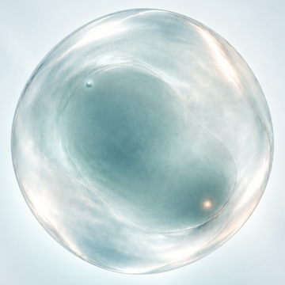

K2 · A shell/core + B interior field study
这是人工通过后的下一步验证页。A 的 shell、silhouette、core 和球体身份冻结；页面从导出的 delta field package 读取 B 的内部纹理组织与流向参考。滑杆只改变内部场，不替换整张图。
LOADING · verification only · no production
背景：中性灰 · field strength：0.00 · flow：0.00 · 播放：暂停
本轮只验证一件事
把 B 的内部动感限制在 A 的球体内部；外壳、轮廓、核心和背景边界必须保持稳定。
0.000
0.000
loading…
保护区检查尚未运行。
自动播放审查参数：输运幅度 0.026，约 3.3 秒完成一轮平滑扫过；只增强可见性，不改变静态 field package、shell 或 core。
锁定与候选

A · static authority
shell / silhouette / core 的唯一静态来源。

B · interior reference
只提供内部纹理和流向参考，B core 不继承。

A shell/core + B interior
已获人工 PASS 的静态候选；本页研究其可控内部字段。
边界
不修改 ProductState、formation、deformation、core movement 或 production；不实现 moving，不做 full-frame crossfade，不把本页的内部偏移直接当作 runtime contract。K2 endpoint 仍需独立 field proof。